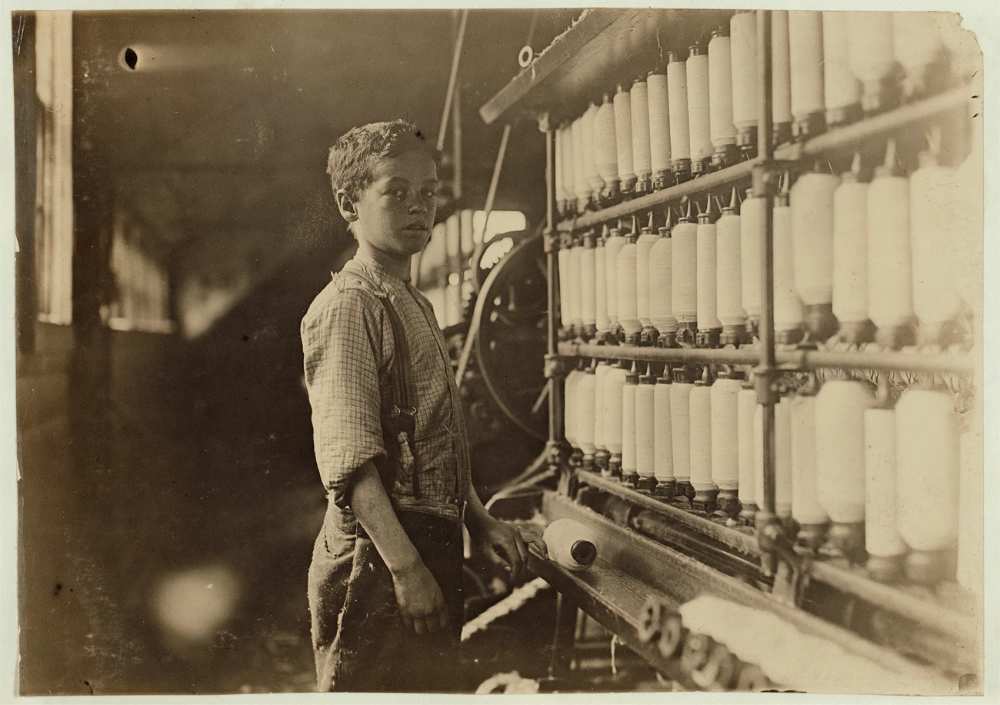
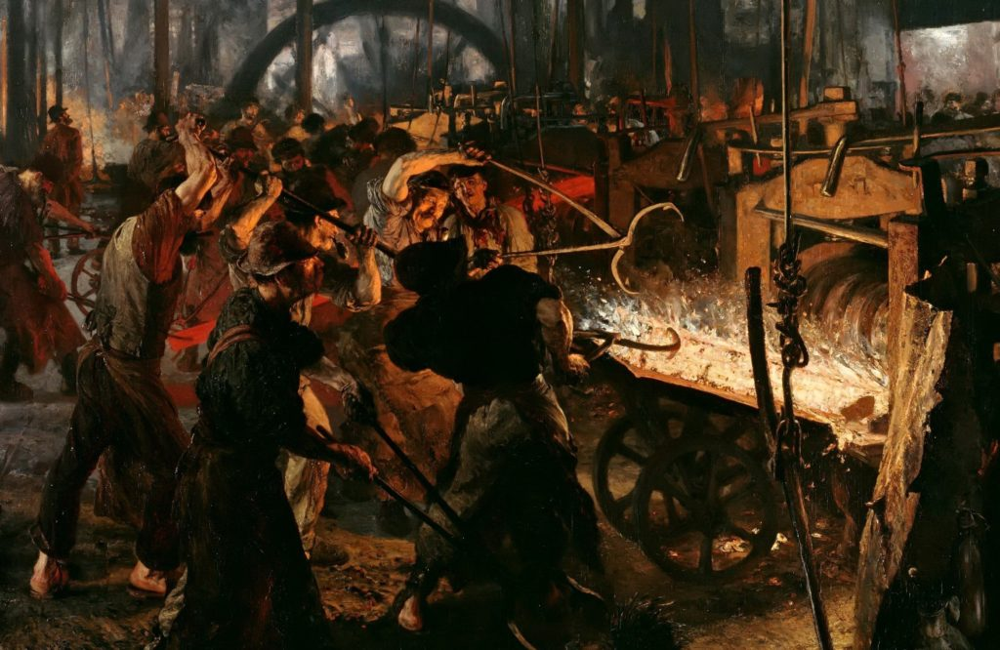

ESSENTIAL QUESTIONHow did industrialization change where people lived, how they worked, and what they believed?
In 1810, a ten-year-old boy named Robert Blincoe arrived at a cotton millA factory that turns cotton into cloth. in Litton, England. He had been sent from a London orphanageA home for children without parents.. Robert worked 14 hours a day, six days a week, near machines that could tear off his fingers if he lost focus. He had no real wages and no way to leave.
In 1810, Robert Blincoe arrived at a cotton mill in England. He was ten years old. He had been sent from an orphanage. He worked 14 hours a day near dangerous machines. He had no real pay and no way to leave.
Robert's story was not rare. Thousands of children worked in mills, mines, and factoriesBuildings where workers use machines to make goods. during the early Industrial Revolution. In one generation, machines changed work, cities, families, and politics. The world got richer, but many workers paid the price with their bodies.
Robert's story was common. Many children worked in mills, mines, and factories. Machines changed work, cities, families, and politics. The world grew richer, but many workers suffered.
For most of history, work depended on muscle, wind, or water. Then James Watt improved the steam engine in the 1760s. A steam engine could power a pump, mill, loom, or locomotiveA train engine that pulls cars.. It did not get tired, and it could be built almost anywhere fuel was available.
For most of history, work used muscle, wind, or water. Then James Watt improved the steam engine. Steam could power pumps, mills, looms, and trains. It did not get tired. It could work almost anywhere with fuel.
Britain industrializedChanged to factory and machine production. first for several reasons. It had coal to fuel engines, rivers and canals to move goods, and coloniesPlaces controlled by another country. that supplied raw materialsNatural resources used to make products.. Cotton from plantations worked by enslaved people helped feed British textile millsFactories that make cloth and fabric.. Britain also had investorsPeople who spend money hoping to earn more. ready to spend money on factories.
Britain industrialized first for clear reasons. It had coal, rivers, canals, and colonies. Cotton from enslaved laborWork done by people. helped feed its textile mills. Britain also had investors with money for factories.
CapitalismAn economy where private ownersPeople or companies owning property for themselves. run businesses for profitMoney left after costs are paid.. helped drive this change. Private owners built factories and competed for profit. New machines made goods cheaper and faster, which helped owners grow rich. Workers often had little control over the pace, pay, or danger of the work.
Capitalism helped drive industrial growth. Private owners built factories for profit. Machines made goods cheaper and faster. Owners grew rich, but workers had little control.
Bessemer converter for mass steel productionMaking large amounts of steel quickly., circa 1860s. Wikimedia Commons.
IndustrializationThe growth of factories, machines, and mass production. came in waves. First came textilesCloth and fabric products., then iron, steel, and railroadsTrain systems that move goods and people.. In 1856, Henry BessemerInventor who made steel cheaper to produce. created a cheaper way to make steel. Cheap steel made railroads, bridges, skyscrapers, and modern cities possible.
Industrialization happened in waves. Textiles came first. Then came iron, steel, and railroads. In 1856, Henry Bessemer made steel cheaper. Cheap steel made railroads, bridges, and modern cities possible.
Factories also changed how labor worked. Division of laborSplitting a job into small repeated tasks. broke production into simple steps. One worker did one task over and over. This made production faster, but it also made workers easier to replace.
Factories changed labor. Division of labor split one job into small tasks. Each worker repeated one task all day. This made production faster. It also made workers easier to replace.
DID YOU KNOW

Children were often used because they were small enough to move under machines.
Some factory owners liked hiring children for a grimly practical reason: small bodies could crawl under moving machines to clean lint or fix broken threads. That means a child's size became part of the machine system itself. The factory did not just use labor; it redesigned childhood around production.
FAST FACTS
14HOUR CHILD SHIFTS
28MANCHESTER LIFE EXPECTANCY
1788WATT ENGINE
1856CHEAP STEEL
1888MATCHGIRLS STRIKE
"I worked from five in the morning till nine at night. I had forty minutes at noon for dinner. There were about thirty-five of us children in the room."
Elizabeth Bentley, testimony to a British Parliamentary Committee on Child Labor, 1832
Elizabeth's testimony helped expose the daily life of children working inside British mills.
■ ■ ■
FROM FARM TO FACTORY: LIFE IN THE NEW CITIES
Gustave Doré, Over London by Rail, 1872. Wikimedia Commons.
Before the Industrial Revolution, most Europeans lived in villages and worked on farms. By 1850, more than half of England's population lived in cities. This movement from countryside to city is called urbanizationWhen many people move from rural areasCountryside areas outside cities. into cities..
Before the Industrial Revolution, most Europeans lived in villages. Most worked on farms. By 1850, more than half of England lived in cities. This move to cities is called urbanization.
Cities like Manchester, BirminghamBritish city known for metal industry., and LiverpoolBritish port city tied to trade and industry. grew faster than governments could plan for. Workers arrived looking for jobs. LandlordsPeople who rent housing to others. built cheap housing and packed families into tiny rooms. Many buildings had no clean water, no sewage systemPipes that carry waste away from homes., and little light.
Cities grew too fast. Workers came for factory jobs. Landlords built cheap housing. Families crowded into tiny rooms. Many homes had no clean water or sewage system.
Factory smoke darkened the air. Human waste ran through open gutters. Diseases spread quickly in crowded neighborhoods. In industrial Manchester during the 1840s, average life expectancy was about 28 years. Industrial growth created wealth, but it also created a public health disasterA crisis that harms many people's health..
Factory smoke filled the air. Waste ran in open gutters. Disease spread quickly. In Manchester in the 1840s, average life expectancy was about 28 years. Industrial growth made wealth and suffering at the same time.
Interior of a Manchester cotton mill, circa 1835. Wikimedia Commons.
Industrial cities also created new social classesGroups divided by wealth, work, and power.Groups ranked by money, job, and status.. A growing middle classPeople with stable jobs and moderate income. worked as managers, engineers, lawyers, doctors, and shopkeepers. They could afford better housing and education. Meanwhile, the working poorPeople who work but still live in poverty. faced long hours, low wages, and dangerous streets.
Industrial cities created new classes. The middle class included managers, engineers, lawyers, doctors, and shopkeepers. They had better homes and education. The working poor faced long hours, low pay, and danger.
Writers like Charles DickensWriter who exposed poverty in industrial England. helped make urban poverty visible. His novels showed workhousesHarsh institutions for poor people needing help., hungry children, and factory owners who treated workers like machine parts. Literature became a political toolSomething used to push for public change. because readers could not ignore the human cost of industrial growth.
Writers like Charles Dickens made poverty visible. His books showed workhouses, hungry children, and cruel factory owners. Stories became a political tool. Readers could see the human cost of industry.
■ ■ ■
THREE BIG IDEAS ABOUT WHO SHOULD OWN THE MACHINES
The Industrial Revolution created a political question that would shape the modern world: who should own the factories? Factory owners, workers, and political thinkers gave different answers. These answers became capitalism, socialism, and communism.
The Industrial Revolution raised a big question. Who should own the factories? Owners, workers, and thinkers gave different answers. Those answers became capitalism, socialism, and communism.
System
Who owns factories?
Who decides?
What happens to profits?
Capitalism
Private owners
Markets and businesses
Owners and investors keep profits
Socialism
Government or community
Government or workers
Profits support workers or public services
Communism
The state for all workers
Central planners
No private profit in theory
First edition of The Communist Manifesto, 1848. Wikimedia Commons.
Capitalism was already growing when factories spread. Adam SmithThinker who defended markets and competitionBusinesses trying to win buyers from each other.. argued that competition and profit could lead to more goods at lower prices. Factory owners liked this idea because it defended private propertyThings owned by people or businesses. and free marketsMarkets with little government control..
Capitalism was already growing. Adam Smith said competition and profit could make goods cheaper. Factory owners liked this idea. It defended private property and free markets.
SocialismAn economy where major industries are owned for public benefit. grew as a response to factory suffering. Socialists argued that workers should share in the wealth they created. Some wanted the government to control major industries. Others wanted workers to own factories together.
Socialism grew because workers suffered. Socialists said workers should share the wealth they created. Some wanted government control of major industries. Others wanted workers to own factories together.
Karl MarxThinker who criticized capitalism and class inequality. and Friedrich EngelsThinker who worked with Karl Marx. pushed the argument further. In The Communist Manifesto, they argued that history was a struggle between classes. They believed workers would eventually overthrow capitalism and create a classless societyA society without rich and poor classes.. Their ideas later shaped revolutionsMajor changes that replace old systems. across the world.
Karl Marx and Friedrich Engels went further. They said history was a fight between classes. They believed workers would overthrow capitalism. Their ideas later shaped revolutions around the world.
Today, most countries mix parts of these systems. They use markets, government rules, and public services. The debate over the right mix is still one of the biggest arguments in politics.
Today, most countries mix these systems. They use markets, government rules, and public services. People still argue about the right mix.
ART SPOTLIGHT

THE IRON ROLLING MILL, ADOLPH MENZEL, 1875. WIKIMEDIA COMMONS.
Menzel painted the workers close to the heat, sparks, and machinery instead of placing them safely in the background. The painting makes industry look powerful, but not clean or simple. You can almost feel the room pressing in on the men who made modern steel possible.
■ ■ ■
WORKERS FIGHT BACK: THE BIRTH OF THE LABOR MOVEMENT
Left: Luddites attacking machinery, 1812. Right: Victorian trade union meeting, circa 1870s. Wikimedia Commons.
Workers did not accept factory conditions quietly. Between 1811 and 1816, English textile workers called Luddites broke into factories and smashed machines. They were not simply afraid of technology. They were angry that owners used machines to cut wages and destroy skilled jobsJobs needing special training or ability..
Workers did not stay quiet. From 1811 to 1816, workers called Luddites smashed factory machines. They were not just afraid of technology. They were angry that owners used machines to cut pay and destroy skilled jobs.
Machine-breaking failed, so workers tried organizingWorkers joining together to demand change.. A labor unionA group of workers who bargain together for better conditions. lets workers act as a group. Instead of one worker asking for better pay alone, all workers can demand change together. If owners refuse, workers can strikeWhen workers stop working to demand change..
Breaking machines did not work. Workers then organized. A labor union lets workers act together. One worker is easy to ignore. Many workers can demand change together. They can also strike.
London matchgirls strike, 1888. Wikimedia Commons.
Early unions faced strong opposition. In Britain, laws once made worker organizing illegal. Employers fired organizers, blacklisted workersWorkers blocked from jobs because of organizing., and used police or private guards against strikes. But unions kept growing because factory work made workers see that they shared the same problems.
Early unions faced attacks. Britain once made worker organizing illegal. Employers fired organizers and blacklisted workers. Some used police or guards against strikes. But unions kept growing.
Women were central to the labor movementOrganized efforts to improve workers' rights.. In 1888, young women at a London match factoryFactory where workers made matches. struck against dangerous conditions and low pay. The chemicals they used could rot workers' jawbones. The matchgirls won, and their victory inspired other unskilled workers to organize.
Women were important in the labor movement. In 1888, young women at a London match factory went on strike. Their work was dangerous and low paid. They won. Their victory inspired other workers.
Weekends, lunch breaks, safety rules, and limits on child laborChildren working long hours, often in unsafe jobs. were not gifts from factory owners. Workers fought for them over decades. The labor movement changed industrial society by proving that workers could use collective powerStrength people gain by acting together..
Weekends, lunch breaks, safety rules, and child labor limits were not gifts. Workers fought for them. The labor movement proved that workers had power when they acted together.
■ ■ ■
PRIMARY SOURCE MOMENT
"The history of all hitherto existing society is the history of class struggles."
Karl Marx and Friedrich Engels, The Communist Manifesto, 1848
Marx and Engels argued that industrial society was part of a long conflict between people with power and people without it.
1. What conflict do Marx and Engels say has shaped history?
2. How does this connect to the essential question about how industrialization changed what people believed?
THEN AND NOW
THE INDUSTRIAL REVOLUTION DID NOT END: IT MOVED, SPREAD, AND CHANGED CLOTHES.
1800S
Workers in a Manchester cotton mill, circa 1835.
TODAY
Garment factory workers in Bangladesh.
The machines look newer, but the body language is familiar: rows of workers, repeated motions, and a clock somewhere deciding the speed of the day. If Robert Blincoe could see a garment factory today, he would recognize the rhythm before he understood the machines.